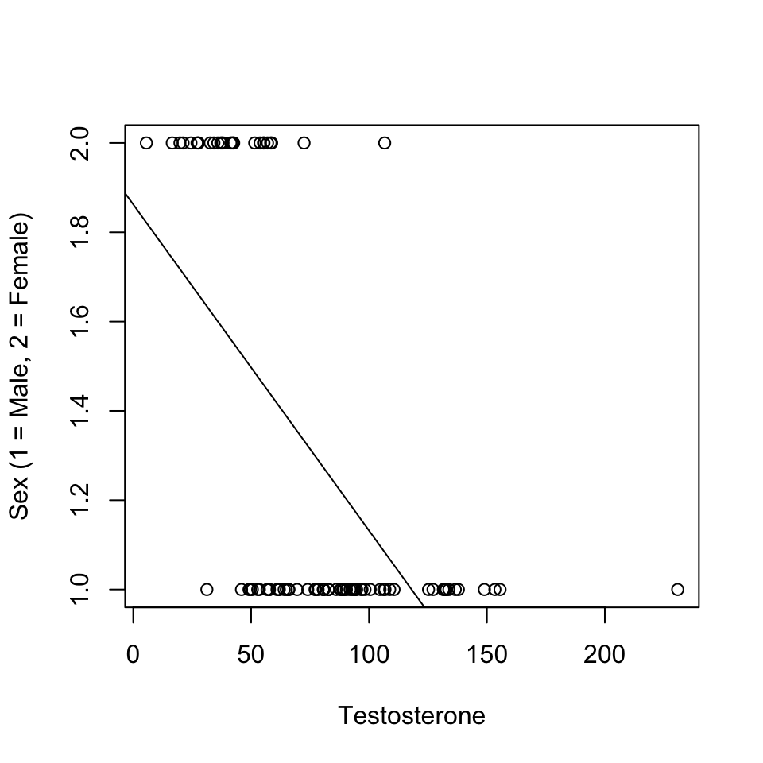

h <- read.csv("~/Dropbox/!GRADSTATS/Datasets/Hormone Data/hormone_dataset.csv")
h$sexF <- as.factor(h$sex)
levels(h$sexF) <- c("Male", "Female")
h$sexF <- relevel(h$sexF, ref = "Female")
plot(sex ~ test_mean, data = h, xlab = "Testosterone", ylab = "Sex (1 = Male, 2 = Female)")
mod2 <- lm(sex ~ test_mean, data = h)
abline(mod2)